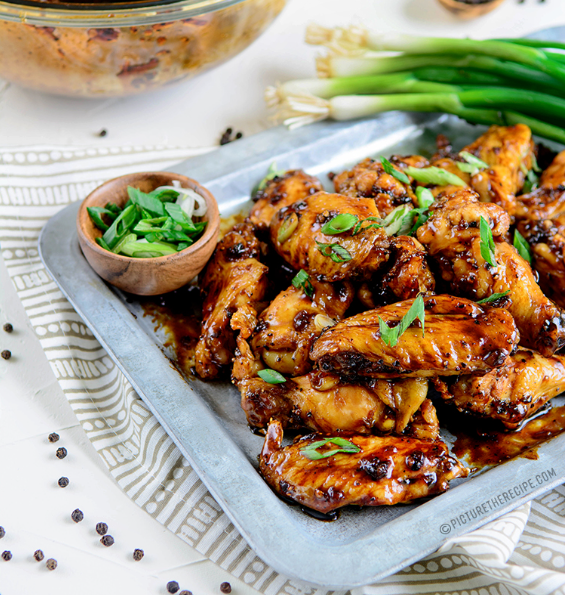
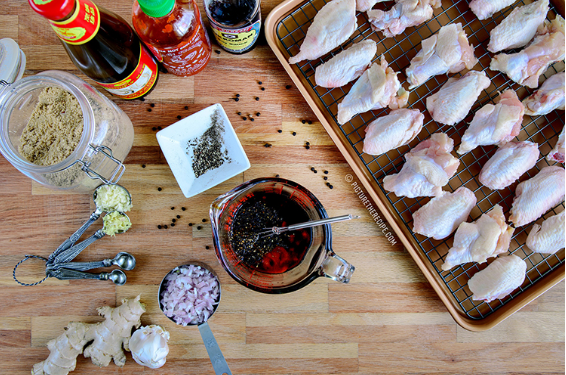
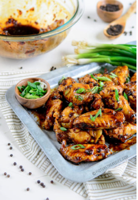

BLACK-PEPPER SOY CHICKEN WINGS
INGREDIENTS
- 3 lbs. Chicken Wings
- 1/2 Cup Shallot, finely diced
- 1 Tbsp Garlic, minced
- 1 tsp Ginger, grated or minced
- 1 Tbsp Black pepper, coarsely ground
- 1/4 Cup Sweet Black Soy
- 1/4 Cup Low Sodium Soy
- 2 Tbsp Oyster Sauce
- 1 Tbsp Sriracha (optional)
- 2 Tbsp Brown Sugar/ Honey
- 2 Tbs Oil
- 3-4 Radishes, sliced
- 2-3 green onions, sliced (for garnish)
DIRECTIONS
- Place the chicken breasts in a large Ziplock bag and pound them using a heavy pan or rolling pin to uniform thickness.
- Mix the oil, salt, pepper, and chipotle pepper powder and rub the mix into the chicken breasts well.
- Allow the chicken to marinate for a bit while you prepare the cherry salsa.
- Roughly chop pitted cherries and put them in bowl.
- Add finely diced shallot (or red onion), chopped jalapeno, and chopped fresh cilantro.
- Add salt, pepper, balsamic vinegar, and squeeze in fresh lime juice.
- Mix well and allow all the flavors to meld by letting it sit out till you grill the chicken or cover and refrigerate for later.
- Heat a grill pan over a medium-high heat or fire up the BBQ.
- Grill the chicken breasts over a medium-high heat for 4-6 mins a side, or until cooked through. Let the cooked chicken rest for 5 mins.
- Slice and place chicken on a plate (on a bed of salad leaves if you'd like) and spoon the fresh cherry salsa generously on top.
PHOTOS


